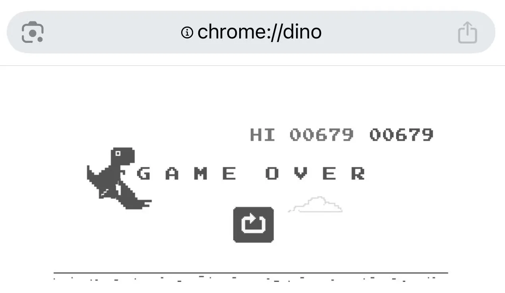

待在适合自己的角落
一场秋风，几场秋雨，气温骤降，北京入冬了。 我也试着进入冬眠的状态——念头弱一点，态度淡一点，饮食饱一点。不留强烈的期盼，只留一口气静待春天。
一场秋风，几场秋雨，气温骤降，北京入冬了。 我也试着进入冬眠的状态——念头弱一点，态度淡一点，饮食饱一点。不留强烈的期盼，只留一口气静待春天。
2025年已经过了四分之三，很快吧，新年在即。时间把所有人的记忆和感受都平等的冲刷在了无法触碰的海，在这里，反方向的钟是不被允许的存在。 一路走到了今天，能够平静下来面对生活的空空荡荡，是一件不容易得来的幸福发现，是一种看淡才能获得的释然。 尽管表面上的平静只是冰山之上的一角，平静之下是涌动的暗流。可行的话（我是指经济），计划来一场酣畅淋漓的滑雪。曾在军都山小试过拳脚，但路途稍遥远，练活适合去更近市区的西山或云居。 运动总是能够为我的精神注入活力，在某些紧绷的生活节奏里运动更显得重要。
此前看过一种说法，说是肩膀与耳朵的距离可以衡量出一个人的松弛状态。如果你的肩膀与耳朵的距离稍远，这就是一种放松自然的姿态； 如果你的肩膀与耳朵的距离挨得很近，这就是一种紧绷、不自然的状态。而我已经注意到自己的肩膀一直在向上抬起不下三五回了。 每当意识到这一点，我就会向上耸耸肩，然后再把肩膀放下来。可是这样的行为并未真正舒缓到精神。 还有一种说法，射箭的准头不在于把弦拉满，也不在于瞄准靶心，而在于肩膀和手的动作到位，主要是肩膀和手臂的肌肉状态。 正确的姿态以及平和的心态，更易射中靶心，此之谓正射必中。所以，正确发力，保持平和，然后去做事情就可以了。

保持平和是一件不太能够轻易就做到的事情，何况我这样急切的冒失鬼，更是要有意识去控制情绪才至少是看起来平和了。转移注意力是一个不错的法子。 不管是情绪还是思绪，越理越乱的时候，我会打开 Chrome 玩一会儿恐龙跑酷小游戏 （地址： chrome://dino/ ）， 注意力集中在避免障碍物和不断前进的数字上面，此时此刻，我得以暂且放一放对其他人事物的关注。 但说来惭愧，我的最高分也就五百多而已，玩游戏的耐心实在有限。（更新一下最高分：679）。 这样2D的游戏，倒是比3D的游戏更能让我快速进入状态，毕竟我晕3D。又菜又爱玩，也就想玩的时候玩一玩，晕了就晕一晕，睡一觉就又活蹦乱跳了。 说这些碎碎叨叨的，也是想记录一下，我越来越善于管理自己，懂得寻找适合自己的角落，做适合自己的事情，偶尔探索新鲜的事物来扩展自己视野的边界，就好。